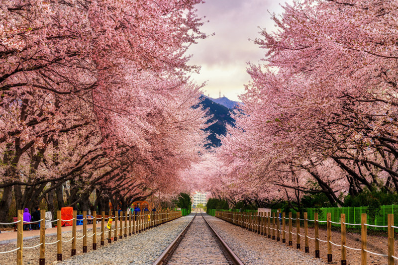
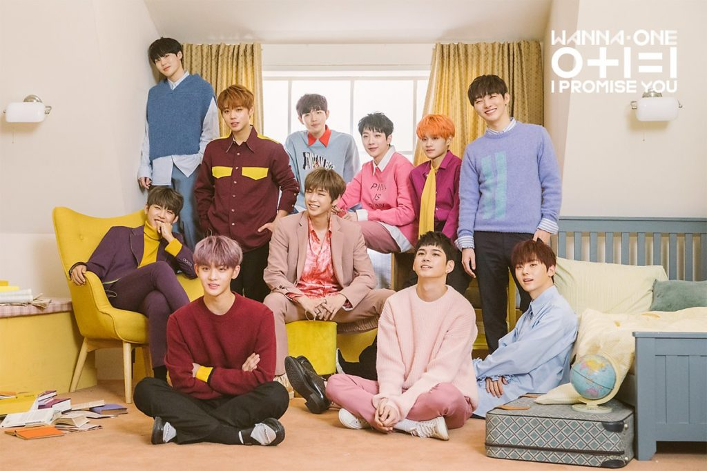
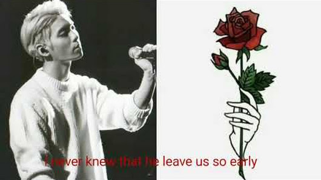

projektide nimistu
his next hospital
korea teemal luuletus
spring comes
sinning
eyes
brightened
reaches the end of its effort to disperse eve
figs covering an
ashamed to run into the leaves
i will shed sweat onhis forehead
on one in the beginning of the moring
korea
korea on linn
väike ta kuid ilus
pealinn on
Seoul
seal mu kodu armas
seal on
loodus ja huvitav kultuur
k-pop
K-pop on korea päritolu muusika. Kpop ameerikas kuulsaks aastal 2012
tänu bigbangile, psy 2ne1 Vahepeal suri kpop välja kuid 2016 aastal
ärkas taas elu. tänu blackpinkile kes oli korea tütrukute bänd.
2017.aastal sai kuuluse endale poiste bänd nimega BTS. kes võitis ka
billborti. BTS on bänd kes alustas 2014.aastal. Esimene debüüd oli
aastal 2016 kui nad võitsid mama tänaseni on k-pop kuulus ka üle
maailma.
wanna one ja block b

Wanna one on poistebänd,mille moodustas 2017. aastal CJ EandM. Wanna
one koosneb 11liikmest. Block B on poistebänd, mis alustas 2011.aastal
cho PD. Block B koosneb 7 liikmestest.

shinee
shine on kpopi üks vanemaid bände. nad alustasid aastal2008
SMentertaimis. esimene debüüd oli 2008 aastal looga replay. algselt oli
viis kuit eelmine aasta suri Jonghyun ära mis oli suur paug neile kuid
nad läksid edasi ja on siiani koos.
